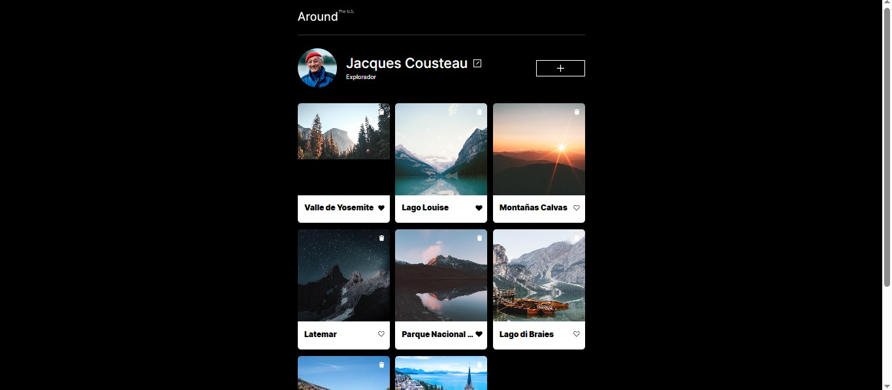

Objetivo: Gestionar ubicaciones dinámicas con autenticación segura y persistencia de datos en el frontend.
Implementación: Construí una arquitectura modular con clases ES6, integré una API REST para operaciones CRUD y validé formularios en tiempo real usando JavaScript, HTML5 y CSS3.
Resultado: Entregué una aplicación escalable y mantenible, consolidando mi dominio en consumo de APIs, gestión de estado y flujos de trabajo profesionales con Git/GitHub.
🔗 Ver Código
🌐 Demo Live